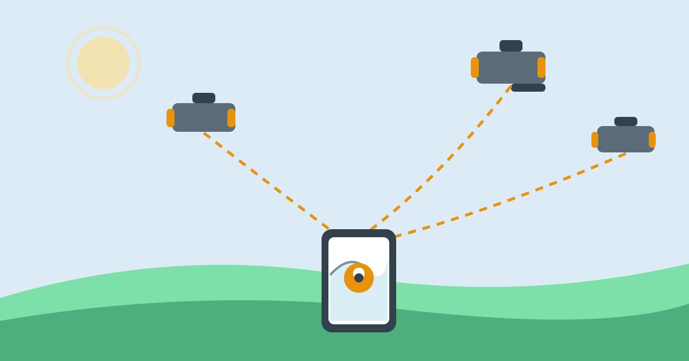

How GPS Knows Where You Are

Open a map on your phone in a town you have never visited, and within seconds a blue dot appears on the right street. No one told the phone where you are. There is no cable and no camera watching you. Yet the dot follows you as you walk and turns when you turn. It feels like the phone simply knows, but it is really doing a quiet piece of maths, using signals from satellites far above your head.
The short version is this: satellites broadcast radio signals that say where each satellite is and the exact time the signal was sent. Your phone receives those signals, works out how long each one took to arrive, and turns those travel times into distances. With distances from several satellites, it can calculate the one point on Earth that fits them all. That point is you.
A Constellation Above Us
GPS, short for Global Positioning System, is a network of satellites built and run by the United States. About 31 satellites are in orbit, arranged so that at least four are visible from almost any open spot on Earth at any time. They circle the planet at a height of about 20,200 kilometres, completing two orbits a day. Each one constantly broadcasts radio signals downwards, covering a wide area below it.
Your phone rarely listens to GPS alone. Most modern phones also use Galileo from Europe, GLONASS from Russia, and BeiDou from China. Together these are called GNSS, short for Global Navigation Satellite Systems. More satellites usually means a faster, more accurate fix, especially on city streets lined with tall buildings.
Timing Is Everything
Each satellite carries atomic clocks, which are far more accurate than any ordinary clock. They lose or gain only a tiny fraction of a second over very long periods. Every signal a satellite sends contains two key pieces of information: the satellite's position in orbit at that moment, and the exact time the signal left the satellite, measured by its atomic clock.
Radio signals travel at the speed of light, about 300,000 kilometres per second. The phone compares the time written in the signal with the arrival time, and multiplies the difference by the speed of light. That gives the distance to the satellite. Timing must be extremely precise: light travels about 300 metres in a single microsecond, so a one-microsecond error would put you about 300 metres from your true position.
Three Distances, Then a Fourth
One distance is not enough. It places you somewhere on the surface of a huge sphere centred on that satellite, which could be almost anywhere. A second satellite narrows it to the circle where two spheres meet. A third narrows it to the two points where all three cross. Usually one of those points is far out in space, so the other must be the answer.
A fourth satellite is also needed in practice. The clock in your phone is ordinary and inexpensive, not atomic, so its time is slightly off, affecting every distance in the same way. A fourth measurement lets the phone work out its clock error and correct all the distances at once. This method is called trilateration. With four or more satellites, the phone can also work out your altitude.
From Distances to a Blue Dot
All of this calculation happens inside the small GPS receiver chip in your phone, many times per second. It combines the satellite distances, corrects for the phone's clock error, and produces a latitude, a longitude, and an altitude. The map app then places the blue dot at that position. As you move, new signals arrive, the calculation repeats, and the dot moves with you.
Speed is worked out similarly: the phone compares its position now with a moment ago, or measures the tiny frequency shift in the signals caused by its own motion, the Doppler shift. Either way, the screen shows your walking, cycling, or driving speed without a speedometer.
Why Accuracy Varies So Much
In open countryside, GPS is usually accurate to within a few metres. In a city it can be much less accurate, mainly because buildings block and reflect signals. A signal that bounces off a glass tower has travelled further than the direct route, so the phone overestimates that distance. This reflection problem, called multipath, is the most common cause of a blue dot on the wrong street.
Trees, roofs, and walls weaken signals too, which is why GPS struggles indoors, in tunnels, and in underground car parks. Clouds and ordinary rain have very little effect, as the GPS frequencies pass through them easily. What matters most is the open sky: the more satellites the phone hears directly, the better the result.
Help From the Phone Itself
Finding a position from scratch can take a while, because the phone first needs data about the satellites' positions and health. The satellites broadcast this data slowly. Assisted GPS, or A-GPS, fetches it faster over the mobile network or Wi-Fi, which is why a phone often finds its position quicker with a data connection, even though the position itself comes from the satellites.
Phones also fill gaps with other clues. Nearby Wi-Fi networks and mobile masts give a rough position when satellite signals are weak. Motion sensors, the accelerometer, gyroscope, and compass, help guess movement between fixes, keeping the dot smooth under a bridge or in a short tunnel. Together they make the blue dot steadier than GPS alone.
Common Misconceptions About GPS
One common misconception is that GPS needs the internet to work. It does not. The satellites broadcast freely, and a phone with no SIM card and no Wi-Fi can still work out its position from them, though it may take longer to get the first fix. What the internet provides is the map itself, and the faster satellite data used by A-GPS. Without a downloaded map, the phone knows its coordinates but has no picture to show them on.
Another is that the satellites are watching you. They are not. A satellite only broadcasts; it receives nothing back and has no idea anyone is listening. Your phone calculates the position privately, inside the device. Tracking happens later, if at all: an app can record or share the position, but that is the app's doing, not the satellites'.
Frequently Asked Questions
Why does the first fix take so long after a flight?
After a long flight, or after the phone has been off for days, its stored satellite data is out of date. It must download fresh data, either slowly from the satellites or quickly over a data connection. Once it has that data, later fixes are much faster, because it already knows roughly which satellites to listen for.
Why does the blue dot sometimes jump to the next street?
Usually because of reflected signals in a built-up area. When the phone mixes a reflected signal with direct ones, the maths places it in the wrong spot for a moment. As more direct signals arrive, the dot usually settles back. Standing still for a few seconds in an open spot often helps it settle.
Does GPS use mobile data or much battery?
Listening to satellites uses battery but no mobile data by itself; data use comes from downloading maps and traffic. Occasional map checks use far less battery than the screen, though constant navigation with the screen lit is a different matter.
Why can GPS not find me indoors?
Roofs and walls weaken satellite signals so much that the phone cannot hear enough satellites clearly, or the signals that arrive have bounced around too much to trust. Indoors, the phone falls back on Wi-Fi and mobile masts, which give a rough position, often good enough to name the building but not the room.
Conclusion
GPS works because of a simple idea carried out with extraordinary precision. Satellites announce where they are and when they spoke, your phone measures how long the message took to arrive, and a few distances are enough to pin down a single point on Earth. Atomic clocks, radio waves, and a little geometry do the rest.
The next time the blue dot appears on your map, it is worth remembering what is behind it: a constellation of satellites 20,200 kilometres overhead, a receiver in your pocket doing millions of calculations, and a system that turns the time a signal spent in flight into the knowledge of exactly where you are standing.